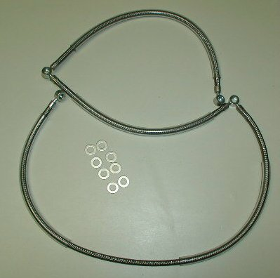
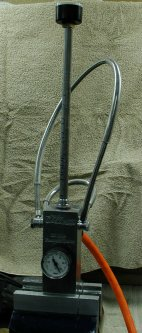
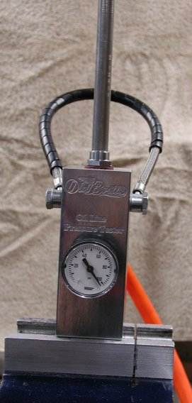

Oil Line Assy, Rocker, Braided, Oil Gauge
The current price for this Old Britts oil line (part # 06-5561/O) is
$145.00,
as of
10/24/07.

These pictures show the Braided Steel rockerfeed line that has a take off for the Old Britts
oil pressure gauge mount.
This line does not come with a grommet for mounting to the rockerfeed clip since the
line is covered with clear plastic covers. We can put black covering on the line instead of clear if desired.
Eight Rocker Feed Sealing Washers (06-7522) are included with this oil line.
This line uses the same banjos as the stock feed line, therefore you can use your stock banjo bolts (06-7696).
We also stock stainless banjo bolts (06-7696/SS).



We pressure test all our braided steel rocker feed oil lines and stand pipes for our oil gauge mounts to 100psi.

Return to Old Britts home page
….. Our Products, Ordering
Norton Parts
…..Frame…..Oil System
This page was written and designed by F. H. Eaton
& Associates if you have any questions or comments please
contact us at info@fheaton.com